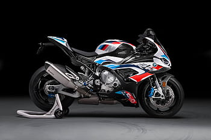
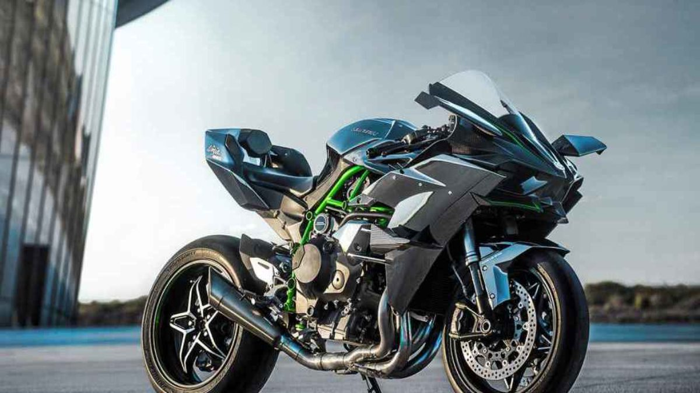

A Review On Super Bikes

BMW S1000 RR
The BMW S 1000 RR is now even more focused and more precisely geared towards pure performance. For those who increasingly demand more. More from themselves. More each lap. And more from their RR. Simply put: #NeverStopChallenging. Leading the way is a matter of millimetres, especially in the circles the RR has always been a part of. That’s why we have streamlined.

Ninja H2R
Kawasaki Ninja H2R is a super bike available in only 1 variant and 1 colour. The Kawasaki Ninja H2R is powered by 998cc BS6 engine which develops a power of 305.75 bhp and a torque of 165 Nm. With both front and rear disc brakes, Kawasaki Ninja H2R comes up with anti-locking braking system. This Ninja H2R bike weighs 216 kg and has a fuel tank capacity of 17 liters.